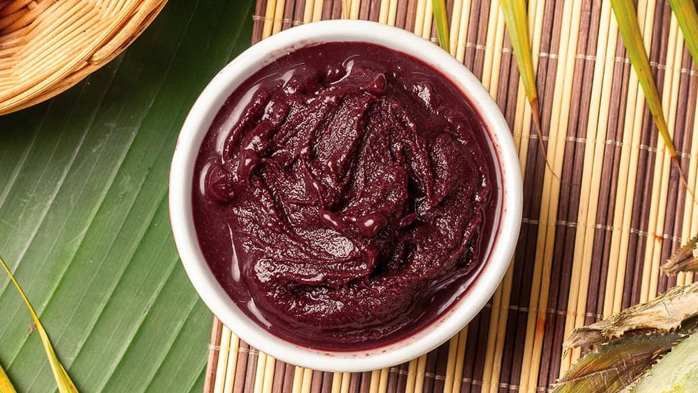
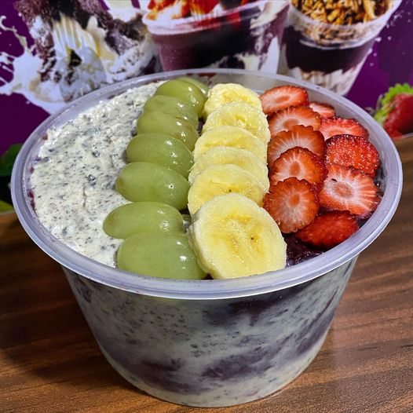
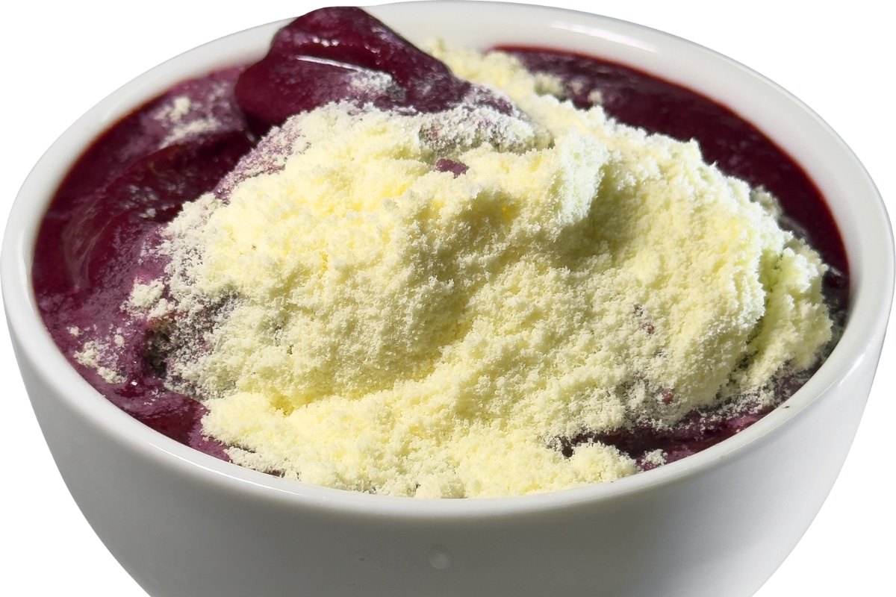
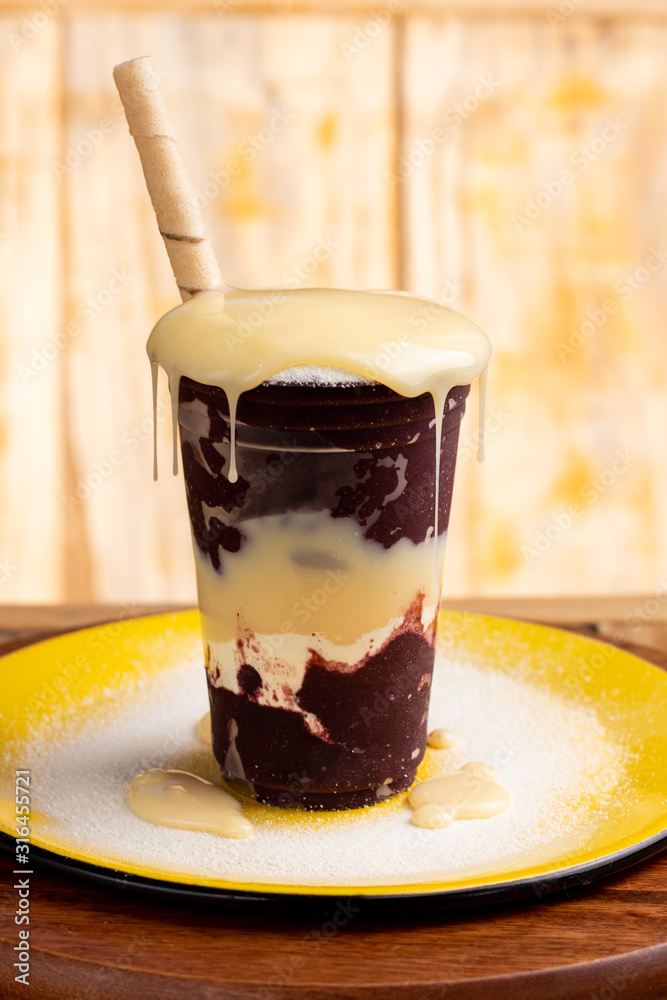
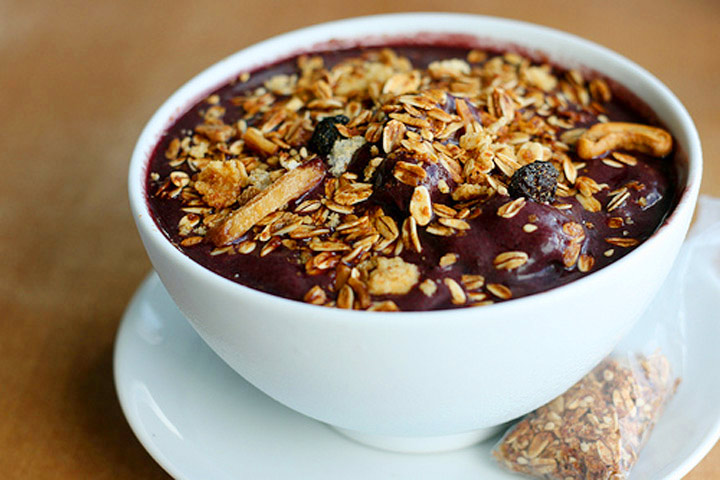
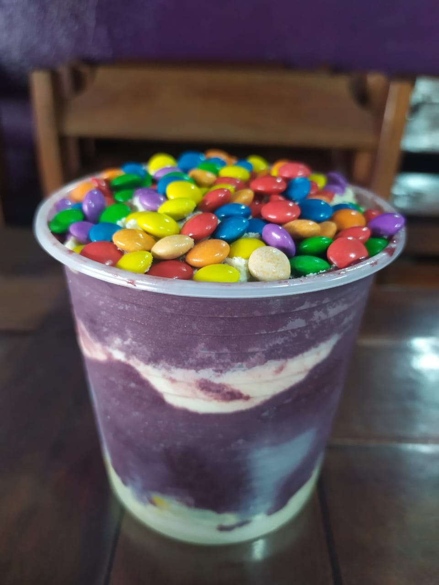
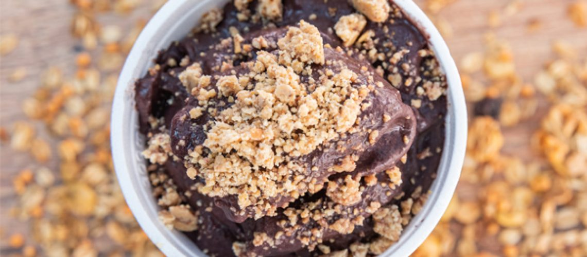

Venho através deste site divulgar a venda e açaí que será realizada pela nossa turma na festa das sementes que acontecerá no dia 21 de novembro de 2024 no colégio Bom Jesus.
A ideia surgiu através da professora de Empreendedorismo e Matemática II, realizando na prática o que aprendemos na sala de aula.
O açaí será comercializado o dia todo das 8hrs da manhã até às 16:30 da tarde.
De frutas teremos: Morango, Banana e Uva;
Teremos também: Leite em Pó e Leite Condensado
 Outros complementos:Granola, Confete e Paçoca.
  